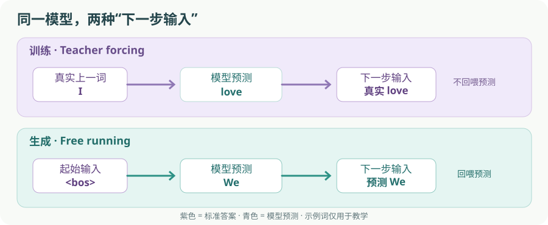
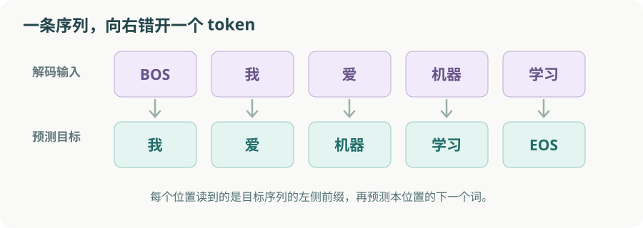
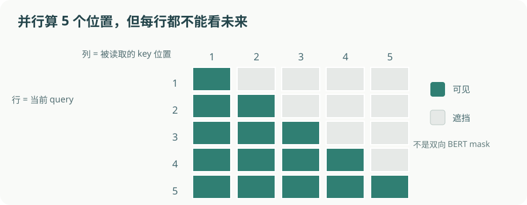
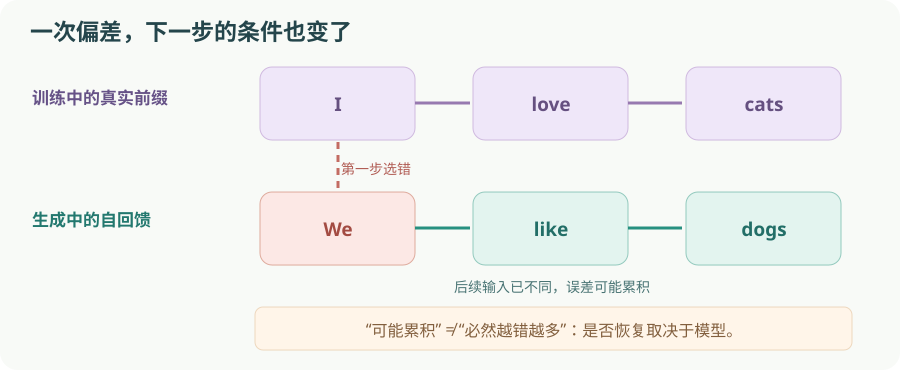

Understanding Teacher Forcing
训练时老师告诉模型“上一个正确的词”，生成时却只能靠自己的上一步预测：为什么这样训练更方便，又会带来什么偏差？
Teacher Forcing（教师强制）不是给模型提前透露下一词的答案。它让模型在训练当前词时，使用真实的历史词作为条件；要预测的当前词仍然需要模型自己算概率。这是理解自回归语言模型、Seq2Seq 解码器以及 exposure bias 的共同起点。
01先看一个“一步之差”的问题
假设我们希望模型学会生成 “I love cats”。在训练中，它可以从真实前缀 I 学着预测 love，再从 I love 预测 cats。但是上线生成时，没有人每一步都把正确词交给它：它先预测出什么，就只能接着那个结果往下写。
最重要的区别：Teacher Forcing 决定了“下一步喂进去什么”，并不等于强制模型“输出正确词”。它改变训练条件，而不是直接修改预测分布。

在循环网络里，这个区别体现在每一步把真实值还是上一预测值送回循环输入；在自回归 Transformer 中，训练时通常是把整条目标序列右移一位后作为 Decoder 输入。
02右移一位：这才是 Teacher Forcing 的数据形式
用中文目标序列举例：我 爱 机器 学习。训练解码器时，在开头加入 <bos>（起始符），在结尾加入 <eos>（结束符）。模型输入与标签一一对应，但标签永远是下一个位置的 token。

| 预测位置 | 模型已经看到 | 这一位置的目标 |
|---|---|---|
| t = 1 | <bos> | 我 |
| t = 2 | <bos> 我 | 爱 |
| t = 3 | <bos> 我 爱 | 机器 |
| t = 4 | <bos> 我 爱 机器 | 学习 |
| t = 5 | 上述全部真实词 | <eos> |
分词器有时会把“机器学习”看作一个 token，也可能拆成更小的子词。这里的单词边界只为说明位置对齐，实际张量长度取决于 tokenizer。
03最小数学形式：条件概率和交叉熵
设 x 是可选的编码器输入（例如待翻译的源句）；y₁ … yₜ 是目标 token，θ 是模型参数。Decoder 在第 t 步建模的是 “给定真实左侧前缀，下一个 token 是什么”：
Teacher Forcing 下每个前缀 y<t 来自数据，而不是随机生成的 ŷ<t。让真实下一个词有更高概率，就得到逐 token 平均负对数似然（交叉熵）：
若标签形状为 [B, T]，模型 logits 通常是 [B, T, V]（B 批次、T 目标步数、V 词表大小）。交叉熵沿词表维度比较目标 token，并仅在非 padding 的有效位置求平均；归一化分母应是有效 token 数，而不是始终等于 B×T。
用三个概率手算
假设模型在三个目标位置上，对正确词的概率分别是 0.8、0.7、0.6。这三个数是为了教学随意设置的，并非任何模型的实际指标。
公式里的 log 是自然对数；把它换成常用准确率会失去“预测置信度”的信息。注意：训练时用真实前缀，不代表交叉熵为零。
04RNN 与 Transformer：同一原则，不同计算方式
RNN / LSTM Decoder
按时间步更新隐藏状态。Teacher Forcing 在第 t 步将真实 yₜ₋₁ 输入循环单元。隐藏状态仍依赖之前步骤，因此计算一般沿时间串行。参见 RNN。
Causal Transformer Decoder
一次输入所有右移后的真实 token。因果注意力 mask 阻止当前位置看到未来 token，多个位置的输出因此可以并行算出。参见 Transformer。

这里是以自回归 Decoder 为讨论对象。BERT 类双向掩码预训练、非自回归生成、扩散模型，不应直接套用“所有训练都是 Teacher Forcing”的说法。
05为什么会出现 Exposure Bias？
模型训练时主要在真实数据前缀上学习条件分布；推理时却可能走到训练语料里很少出现的模型自生成前缀。这种条件分布差异常被称作 exposure bias（暴露偏差），是 Scheduled Sampling 的核心动机之一 [2]。

We；Teacher Forcing 仍在真实前缀 I 上预测 love，自由生成则接着 We 预测 like。这说明“为何可能偏离”，不意味着模型总会持续犯错。必须区分两个概念：Exposure bias 描述训练与运行所遇到的历史输入不一致；错误累积只是它可能引发的一种现象。强模型可能自行纠错；而即使没有 exposure bias，生成也仍受建模能力、采样温度和任务难度影响。
06动手看：同一个模型，两条后续路径
切换输入来源，查看当前步
我们故意固定一张确定性“下一词表”：BOS→We、I→love、We→like、love→cats、like→dogs。切换模式只改变上一词来自真值还是预测，模型本身没有改变。
展示的是人为指定的词转移，而不是神经网络概率，也没有“测出”真实的性能下降。先切换到自由生成，再把滑杆移动到第 2、3 步观察路径分叉。
07再看数字：置信度差一点，损失会怎样？
只修改第二个正确词的预测概率
保持第 1、3 步正确词概率为 0.8 和 0.6，拖动中间步概率。你会看到：Teacher Forcing 用真实前缀训练，但仍然严厉惩罚对正确词缺乏信心。
这是只有三个位置的无 padding 教学算例；真实训练还需处理词表 logits、忽略位置与 batch 聚合。
08有哪些相关改法？它们不是同一件事
| 方法 | 下一步喂什么 | 核心目的 / 代价 |
|---|---|---|
| 纯 Teacher Forcing | 真实上一个 token | 稳定且便于最大似然训练；训练时未暴露于自身错误前缀 |
| Free-running 训练 | 模型采样或预测 token | 更接近生成轨迹；离散采样带来训练与梯度估计困难 |
| Scheduled Sampling [2] | 按训练进度混合真值与预测 | 逐渐增加自回馈经历；不是标准最大似然目标的等价替换，统计一致性与实现细节需审慎评估 |
| Professor Forcing [3] | 并行考虑 teacher-forced 与 free-running 轨迹 | 利用对抗训练鼓励两种运行模式的隐藏动态更接近；增加额外目标和训练复杂度 |
不要机械地下结论“Teacher Forcing 必须被 Scheduled Sampling 取代”。 标准的下一个 token 最大似然训练，在很多自回归语言模型中仍是基础目标；替代策略的收益取决于任务、目标函数和评估方式。
09最小可复算代码：先学对齐，再学损失
仓库附有 教学 Python 文件（源码位于文章目录；正式网站只发布 HTML）。下面仅摘出最关键的计算。它不依赖 PyTorch，不能把它当成“复现论文的完整 RNN”：
from math import log
tokens = ["<bos>", "我", "爱", "机器", "学习", "<eos>"]
inputs = tokens[:-1] # <bos> 我 爱 机器 学习
targets = tokens[1:] # 我 爱 机器 学习 <eos>
assert len(inputs) == len(targets) == 5
assert inputs[1] == "我" and targets[1] == "爱"
p_correct = [0.8, 0.7, 0.6]
loss = -sum(log(p) for p in p_correct) / len(p_correct)
assert abs(loss - 0.3635480) < 1e-6
print(round(loss, 5)) # 0.36355在真实的分类头里，应该先对 [B,T,V] logits 计算 log_softmax，再针对每个标签取对应的 log probability；训练梯度从交叉熵经网络参数反向传播。argmax 产生的 token 不应被误作训练标签。
10五个容易混淆的边界
- “老师”不会替模型回答当前词。 上一个词是真值，当前词仍被预测并与目标比较。
- Teacher Forcing 不等于数据泄漏。 正确的自回归 mask 禁止当前位置看未来；忘记 shift 或 mask 才可能泄漏标签。
- 它不是独属于 RNN 的旧技巧。 自回归 Transformer 右移目标并做因果预测，也是这一思想的常见训练形式。
- 它也不等于全部训练都能并行。 Transformer 可以在因果 mask 下并行训练各位置，循环结构一般仍需按时间递推。
- Exposure bias 并不证明生成一定崩溃。 一步预测失误后可能恢复，也可能越走越偏；图中转移表只是帮助理解条件变化。
11把机制压缩成三句话
训练：给真实历史，预测下一词；推理：给模型自己生成的历史，继续预测；风险：两种前缀分布不同，训练时没见过的错误路径可能影响后续生成。
建议先回顾 RNN 的时间展开，再读 Seq2Seq 的 Encoder–Decoder、Transformer 的 causal mask，最后把这篇文章与自回归 GPT-1 训练联系起来。文末有主要来源，便于区分算法历史与后来提出的替代方案。
参考资料与版本边界
- Williams, R. J. & Zipser, D. (1989). A Learning Algorithm for Continually Running Fully Recurrent Neural Networks. Neural Computation 1(2). DOI。早期循环网络中 teacher-forced 学习的历史来源。
- Bengio, S., Vinyals, O., Jaitly, N., & Shazeer, N. (2015). Scheduled Sampling for Sequence Prediction with Recurrent Neural Networks. NeurIPS. 论文。训练/生成前缀不一致的动机与一种后续方案。
- Lamb, A. M. et al. (2016). Professor Forcing: A New Algorithm for Training Recurrent Networks. NeurIPS. 论文。清晰陈述 Teacher Forcing 与自由采样的运行差异，并提出正则化方案。
- Vaswani, A. et al. (2017). Attention Is All You Need. NeurIPS, §3.2.3（decoder masking）。论文。Transformer 目标右移和因果注意力的架构背景。
- Goodfellow, I., Bengio, Y., & Courville, A. (2016). Deep Learning, Chapter 10: Sequence Modeling. 章节。序列建模与 Teacher Forcing 的教学参照。